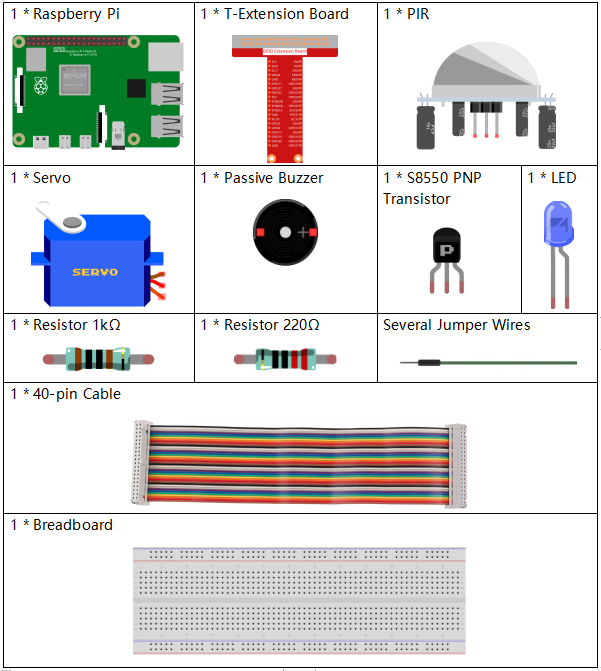
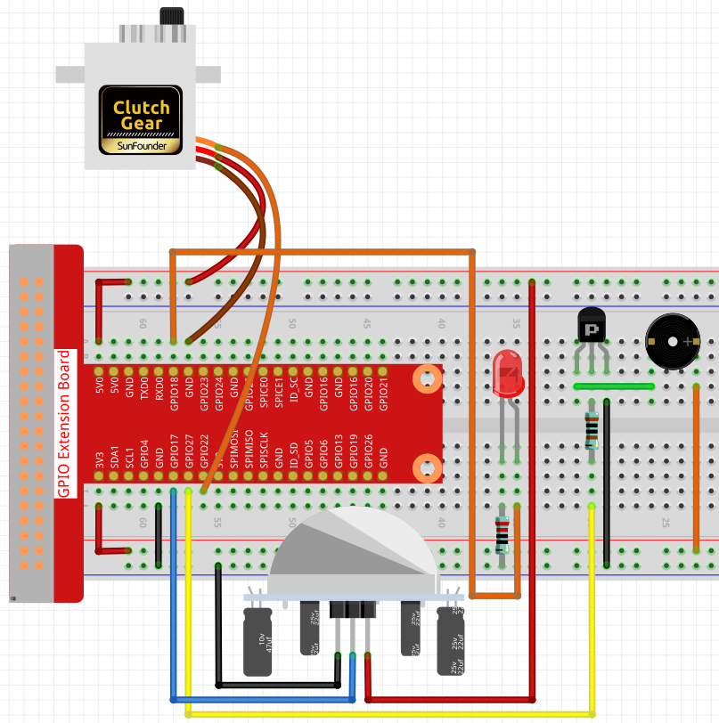

Nota
Ciao, benvenuto nella Community di appassionati SunFounder di Raspberry Pi, Arduino e ESP32 su Facebook! Approfondisci Raspberry Pi, Arduino ed ESP32 insieme ad altri appassionati.
Perché Unirsi a Noi?
Supporto Esperto: Risolvi problemi post-vendita e sfide tecniche con il supporto della nostra community e del nostro team.
Impara e Condividi: Scambia consigli e tutorial per migliorare le tue competenze.
Anteprime Esclusive: Ottieni accesso anticipato agli annunci di nuovi prodotti e alle anteprime.
Sconti Speciali: Godi di sconti esclusivi sui nostri prodotti più recenti.
Promozioni e Giveaway Festivi: Partecipa a giveaway e promozioni festive.
👉 Sei pronto a esplorare e creare con noi? Clicca su [Qui] e unisciti oggi!
3.1.2 Benvenuto
Introduzione
In questo progetto utilizzeremo il sensore PIR per rilevare il movimento dei pedoni e impiegheremo servo, LED e cicalino per simulare il funzionamento della porta sensore di un negozio. Quando un pedone entra nell’area di rilevamento del PIR, la luce indicatrice si accenderà, la porta si aprirà e il cicalino suonerà una campanella di benvenuto.
Componenti
Schema a Blocchi
T-Board Name |
physical |
wiringPi |
BCM |
GPIO18 |
Pin 12 |
1 |
18 |
GPIO17 |
Pin 11 |
0 |
17 |
GPIO27 |
Pin 13 |
2 |
27 |
GPIO22 |
Pin 15 |
3 |
22 |

Procedure Sperimentali
Passo 1: Costruisci il circuito.
{kind=link}
Per Utenti di Linguaggio C
Passo 2: Cambia la directory.
cd ~/davinci-kit-for-raspberry-pi/c/3.1.2/
Passo 3: Compila.
gcc 3.1.2_Welcome.c -lwiringPi
Passo 4: Esegui.
sudo ./a.out
Dopo l’esecuzione del codice, se il sensore PIR rileva una persona, la porta si aprirà automaticamente (simulata dal servo), si accenderà l’indicatore e suonerà la campanella. Dopo aver suonato, il sistema chiuderà automaticamente la porta e spegnerà la luce, in attesa del passaggio successivo.
Sul modulo PIR sono presenti due potenziometri: uno per regolare la sensibilità e l’altro per la distanza di rilevamento. Per un funzionamento ottimale, ruotali entrambi in senso antiorario fino alla fine.
Nota
Se il codice non funziona o compare un messaggio di errore: "wiringPi.h: No such file or directory", consulta Il codice C non funziona?.
Spiegazione del Codice
void setAngle(int pin, int angle){ //Crea una funzione per controllare l'angolo del servo.
if(angle < 0)
angle = 0;
if(angle > 180)
angle = 180;
softPwmWrite(pin,Map(angle, 0, 180, 5, 25));
}
Crea una funzione, setAngle, per impostare l’angolo del servo tra 0 e 180 gradi.
void doorbell(){
for(int i=0;i<sizeof(song)/4;i++){
softToneWrite(BuzPin, song[i]);
delay(beat[i] * 250);
}
Crea una funzione doorbell per far suonare il cicalino.
void closedoor(){
digitalWrite(ledPin, LOW); //spegni il LED
for(int i=180;i>-1;i--){ //fai ruotare il servo dall'angolo massimo all'angolo minimo
setAngle(servoPin,i);
delay(1);
}
}
Crea una funzione closedoor per simulare la chiusura della porta, spegnere il LED e far ruotare il servo da 180 a 0 gradi.
void opendoor(){
digitalWrite(ledPin, HIGH); //accendi il LED
for(int i=0;i<181;i++){ //fai ruotare il servo dall'angolo minimo all'angolo massimo
setAngle(servoPin,i);
delay(1);
}
doorbell();
closedoor();
}
La funzione opendoor() comprende diverse parti: accende la luce indicatrice, ruota il servo (simulando l’apertura della porta), suona la campanella e richiama la funzione closedoor() dopo il suono.
int main(void)
{
if(wiringPiSetup() == -1){ //in caso di fallimento nella configurazione di wiringPi, stampa un messaggio a schermo
printf("setup wiringPi failed !");
return 1;
}
if(softToneCreate(BuzPin) == -1){
printf("setup softTone failed !");
return 1;
......
Nella funzione main(), inizializza la libreria wiringPi e configura softTone; poi imposta ledPin come uscita e pirPin come ingresso. Se il sensore PIR rileva il passaggio di una persona, viene chiamata la funzione opendoor per simulare l’apertura della porta.
Per Utenti di Linguaggio Python
Passo 2: Cambia la directory.
cd ~/davinci-kit-for-raspberry-pi/python/
Passo 3: Esegui.
sudo python3 3.1.2_Welcome.py
Dopo l’esecuzione del codice, se il sensore PIR rileva il passaggio di una persona, la porta si aprirà automaticamente (simulata dal servo), accenderà l’indicatore e suonerà una melodia di benvenuto. Dopo la melodia, il sistema chiuderà automaticamente la porta e spegnerà la luce indicatrice, in attesa del passaggio successivo.
Sul modulo PIR sono presenti due potenziometri: uno per regolare la sensibilità e l’altro per la distanza di rilevamento. Per un funzionamento ottimale, ruotali entrambi in senso antiorario fino alla fine.
codice
Nota
Puoi Modificare/Reimpostare/Copiare/Eseguire/Interrompere il codice qui
sotto. Prima di farlo, però, è necessario spostarsi nel percorso del codice
sorgente come davinci-kit-for-raspberry-pi/python.
import RPi.GPIO as GPIO
import time
SERVO_MIN_PULSE = 500
SERVO_MAX_PULSE = 2500
ledPin = 18 # definisci il pin del LED
pirPin = 17 # definisci il pin del sensore
servoPin = 22 # definisci il pin del servo
buzPin = 27 # definisci il pin del cicalino
CL = [0, 131, 147, 165, 175, 196, 211, 248] # Frequenze delle note di Do Basso
CM = [0, 262, 294, 330, 350, 393, 441, 495] # Frequenze delle note di Do Medio
CH = [0, 525, 589, 661, 700, 786, 882, 990] # Frequenze delle note di Do Alto
song = [CH[5], CH[2], CM[6], CH[2], CH[3], CH[6], CH[3], CH[5], CH[3], CM[6], CH[2]]
beat = [ 1,1,1,1,1,2,1,1,1,1,1,]
def setup():
global p
global Buzz # Assegna una variabile globale per il controllo del PWM
GPIO.setmode(GPIO.BCM) # Configura i GPIO in modalità BCM
GPIO.setup(ledPin, GPIO.OUT) # Imposta il ledPin come uscita
GPIO.setup(pirPin, GPIO.IN) # Imposta il sensorPin come ingresso
GPIO.setup(servoPin, GPIO.OUT) # Imposta il servoPin come uscita
GPIO.output(servoPin, GPIO.LOW) # Imposta servoPin su LOW
GPIO.setup(buzPin, GPIO.OUT) # Imposta il pin del cicalino come uscita
Buzz = GPIO.PWM(buzPin, 440) # 440 è la frequenza iniziale
Buzz.start(50) # Avvia il cicalino con un duty cycle del 50%
p = GPIO.PWM(servoPin, 50) # Imposta la frequenza del servo a 50Hz
p.start(0) # Duty Cycle iniziale a 0
def map(value, inMin, inMax, outMin, outMax):
return (outMax - outMin) * (value - inMin) / (inMax - inMin) + outMin
def setAngle(angle): # Ruota il servo a uno specifico angolo (0-180 gradi)
angle = max(0, min(180, angle))
pulse_width = map(angle, 0, 180, SERVO_MIN_PULSE, SERVO_MAX_PULSE)
pwm = map(pulse_width, 0, 20000, 0, 100)
p.ChangeDutyCycle(pwm) # Mappa l'angolo al duty cycle e invialo in uscita
def doorbell():
for i in range(1, len(song)): # Esegui la melodia
Buzz.ChangeFrequency(song[i]) # Cambia la frequenza in base alla nota
time.sleep(beat[i] * 0.25) # Mantieni la nota per (beat * 0.25)s
time.sleep(1) # Pausa di un secondo prima della prossima melodia
def closedoor():
GPIO.output(ledPin, GPIO.LOW)
for i in range(180, -1, -1): # Ruota il servo da 180 a 0 gradi
setAngle(i)
time.sleep(0.001)
time.sleep(1)
def opendoor():
GPIO.output(ledPin, GPIO.LOW)
for i in range(0, 181, 1): # Ruota il servo da 0 a 180 gradi
setAngle(i) # Imposta l'angolo del servo
time.sleep(0.001)
time.sleep(1)
doorbell()
closedoor()
def loop():
while True:
if GPIO.input(pirPin)==GPIO.HIGH:
opendoor()
def destroy():
GPIO.cleanup() # Rilascia le risorse
p.stop()
Buzz.stop()
if __name__ == '__main__': # Inizia il programma qui
setup()
try:
loop()
except KeyboardInterrupt: # Alla pressione di 'Ctrl+C', viene eseguita la funzione destroy()
destroy()
Spiegazione del Codice
def setup():
global p
global Buzz # Assegna una variabile globale per sostituire GPIO.PWM
GPIO.setmode(GPIO.BCM) # Numerazione dei GPIO per posizione fisica
GPIO.setup(ledPin, GPIO.OUT) # Imposta il ledPin come uscita
GPIO.setup(pirPin, GPIO.IN) # Imposta il sensorPin come ingresso
GPIO.setup(buzPin, GPIO.OUT) # Imposta i pin come uscite
Buzz = GPIO.PWM(buzPin, 440) # 440 è la frequenza iniziale.
Buzz.start(50) # Avvia il pin del cicalino con un duty cycle del 50%
GPIO.setup(servoPin, GPIO.OUT) # Imposta il servoPin come uscita
GPIO.output(servoPin, GPIO.LOW) # Imposta il servoPin su LOW
p = GPIO.PWM(servoPin, 50) # Imposta la frequenza a 50Hz
p.start(0) # Duty Cycle iniziale = 0
Queste istruzioni inizializzano i pin di ciascun componente.
def setAngle(angle): # fa ruotare il servo a un angolo specifico (0-180 gradi)
angle = max(0, min(180, angle))
pulse_width = map(angle, 0, 180, SERVO_MIN_PULSE, SERVO_MAX_PULSE)
pwm = map(pulse_width, 0, 20000, 0, 100)
p.ChangeDutyCycle(pwm) # mappa l'angolo al duty cycle e lo invia in uscita
Crea una funzione, servowrite, per scrivere l’angolo nel servo compreso tra 0-180 gradi.
def doorbell():
for i in range(1, len(song)): # Esegui song1
Buzz.ChangeFrequency(song[i]) # Cambia la frequenza in base alla nota
time.sleep(beat[i] * 0.25) # ritarda una nota per beat * 0.25s
Crea una funzione, doorbell, per abilitare il cicalino a riprodurre la melodia.
def closedoor():
GPIO.output(ledPin, GPIO.LOW)
Buzz.ChangeFrequency(1)
for i in range(180, -1, -1): # fa ruotare il servo da 180 a 0 gradi
setAngle(i)
time.sleep(0.001)
Chiude la porta e spegne la luce indicatrice.
def opendoor():
GPIO.output(ledPin, GPIO.LOW)
for i in range(0, 181, 1): # fa ruotare il servo da 0 a 180 gradi
setAngle(i) # Scrive l'angolo nel servo
time.sleep(0.001)
doorbell()
closedoor()
La funzione opendoor() include diverse operazioni: accende la luce indicatrice, fa ruotare il servo (per simulare l’apertura della porta), riproduce la melodia del campanello del negozio e, al termine, chiama la funzione closedoor().
def loop():
while True:
if GPIO.input(pirPin)==GPIO.HIGH:
opendoor()
Quando il PIR rileva il passaggio di qualcuno, richiama la funzione opendoor().